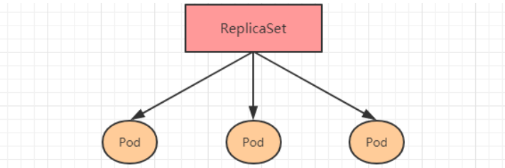
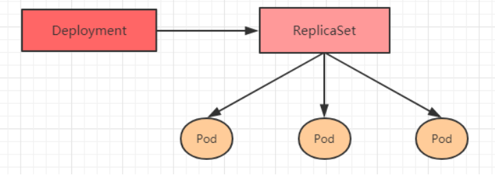
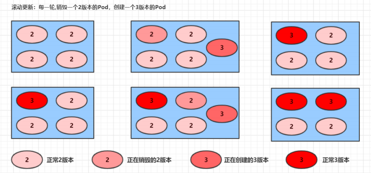
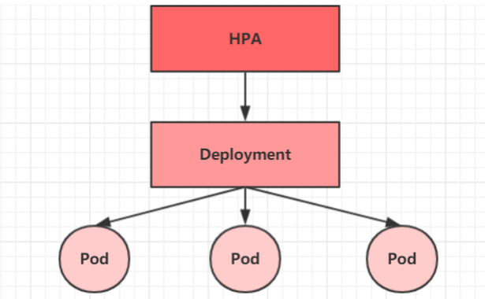
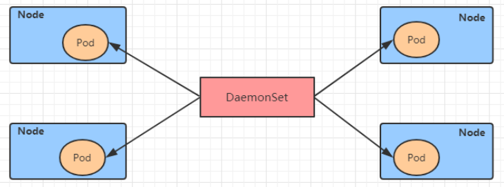
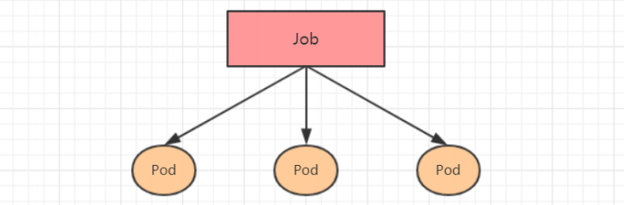
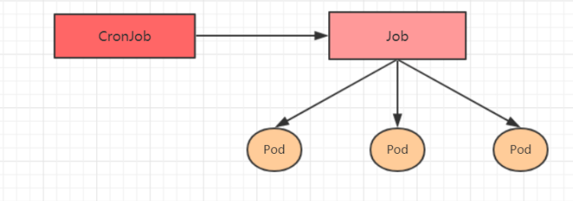

13.Pod控制器详解
Pod 控制器详解
Pod 是 kubernetes 的最小控制单元，分为两种
自主式 Pod：直接创建的 Pod，不会重建
控制器创建的 Pod：删除了会重建
Pod 控制器可以理解为管理 Pod 的中间层
ReplicationController：比较原始的pod控制器，已经被废弃，由ReplicaSet替代
ReplicaSet（RS）：保证副本数量一直维持在期望值，并支持pod数量扩缩容，镜像版本升级
Deployment：通过控制ReplicaSet来控制Pod，并支持滚动升级、回退版本
Horizontal Pod Autoscaler（HPA）：可以根据集群负载自动水平调整Pod的数量，实现削峰填谷
DaemonSet：在集群中的指定Node上运行且仅运行一个副本，一般用于守护进程类的任务
Job：它创建出来的pod只要完成任务就立即退出，不需要重启或重建，用于执行一次性任务
Cronjob：它创建的Pod负责周期性任务控制，不需要持续后台运行
StatefulSet：管理有状态应用
ReplicaSet（RS）
ReplicaSet 的主要作用是保证一定数量的pod正常运行，它会持续监听这些Pod的运行状态，一旦Pod发生故障，就会重启或重建。同时它还支持对pod数量的扩缩容和镜像版本的升降级。

1 | apiVersion: apps/v1 # 版本号 |
replicas：副本数量
selector：选择器，建立 Pod 控制器和 pod 之间的关联关系。采用的Label Selector机制在 pod 模板上定义 label，在控制器上定义选择器，就可以表明当前控制器能管理哪些pod了
template：控制器创建 Pod 的模板
增删操作和 Pod 类似，不做赘述
扩缩容
1 | # 使用scale命令实现扩缩容， 后面--replicas=n直接指定目标数量即可 |
镜像升级
1 | # 编辑rs的容器镜像 - image: nginx:1.17.2 |
Deployment（Deploy）
Deployment主要功能有下面几个：
支持 ReplicaSet 的所有功能（基于RS）
支持发布的停止、继续
支持滚动升级和回滚版本

1 | apiVersion: apps/v1 # 版本号 |
扩缩容
1 | # 变更副本数量为5个 |
镜像更新
Deployment 支持两种更新策略：
重建更新：全部删除，全部重建
滚动更新
1 | strategy：指定新的Pod替换旧的Pod的策略， 支持两个属性： |

版本回退
deployment支持版本升级过程中的暂停、继续功能以及版本回退等诸多功能，下面具体来看。
kubectl rollout：
版本升级相关功能，支持下面的选项：
status 显示当前升级状态
history 显示 升级历史记录
pause 暂停版本升级过程
resume 继续已经暂停的版本升级过程
restart 重启版本升级过程
undo 回滚到上一级版本（可以使用--to-revision回滚到指定版本）
1 | # 查看当前升级版本的状态 |
金丝雀发布
Deployment控制器支持控制更新过程中的控制，如“暂停(pause)”或“继续(resume)”更新操作。
比如有一批新的 Pod 资源创建完成后立即暂停更新过程，此时，仅存在一部分新版本的应用，主体部分还是旧的版本。然后，再筛选一小部分的用户请求路由到新版本的Pod应用，继续观察能否稳定地按期望的方式运行。确定没问题之后再继续完成余下的 Pod 资源滚动更新，否则立即回滚更新操作。这就是所谓的金丝雀发布。
1 | # 更新deployment的版本，并配置暂停deployment |
Horizontal Pod Autoscaler（HPA）
HPA可以获取每个 Pod 利用率，然后和 HPA 中定义的指标进行对比，同时计算出需要伸缩的具体值，最后实现 Pod 的数量的调整。其实 HPA 与之前的 Deployment 一样，也属于一种 Kubernetes 资源对象，它通过追踪分析 RC 控制的所有目标 Pod 的负载变化情况，来确定是否需要针对性地调整目标Pod的副本数，这是HPA的实现原理。

DaemonSet（DS）
DaemonSet 类型的控制器可以保证在集群中的每一台（或指定）节点上都运行一个副本。一般适用于日志收集、节点监控等场景。
也就是说，如果一个 Pod 提供的功能是节点级别的（每个节点都需要且只需要一个），那么这类 Pod 就适合使用 DaemonSet 类型的控制器创建。
DaemonSet 控制器的特点：
每当向集群中添加一个节点时，指定的 Pod 副本也将添加到该节点上
当节点从集群中移除时，Pod 也就被垃圾回收了

Job
Job，主要用于负责批量处理短暂的一次性任务。Job特点如下：
当Job创建的pod执行成功结束时，Job将记录成功结束的pod数量
当成功结束的pod达到指定的数量时，Job将完成执行

1 | apiVersion: batch/v1 # 版本号 |
CronJob（CJ）
CronJob 控制器以 Job 控制器资源为其管控对象，并借助它管理 pod 资源对象，Job 控制器定义的作业任务在其控制器资源创建之后便会立即执行，但 CronJob 可以以类似于 Linux 操作系统的周期性任务作业计划的方式控制其运行时间点及重复运行的方式。也就是说，CronJob可以在特定的时间点去运行job任务。

1 | apiVersion: batch/v1beta1 # 版本号 |
1 | schedule: cron表达式，用于指定任务的执行时间 |